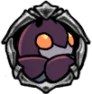

Great Husk Sentry
 Animated remains of a Great Sentry, the most elite of the city's guards. Wields a greatnail and shell. Its powerful attacks cause heavy damage.An extremely rare thing, a bug of Hallownest that actually poses a threat. Watch them carefully, as they can lash out quickly with devastating strikes.
Animated remains of a Great Sentry, the most elite of the city's guards. Wields a greatnail and shell. Its powerful attacks cause heavy damage.An extremely rare thing, a bug of Hallownest that actually poses a threat. Watch them carefully, as they can lash out quickly with devastating strikes.

x 50
x 80
 x 10
x 10The Great Husk Sentry is a large ground based enemy which patrols the more open sections of the City of Tears. It sports a large health pools, and deals two masks of damage if it lands a hit with its nail.

 The Great Husk Sentry will patrol back and forth until finding the player.As the player approaches, the Great Husk Sentry will move its shield to cover itself either in front or above itself depending on the players position.If the player remains in the Great Husk Sentry's range for too long, it will swing its nail twice in two sweeping archs, which cover a large area in both front of itself and behind it on the followthrough. Its nail attack deals two masks of damage.If the player attacks its shield while the shield is raised above its head, the Great Husk Sentry will perform one swing aimed upwards.If its shield is attacked while the shield is facing forwards, the Great Husk Sentry will swing its nail twice in the same sweeping archs. It can stop its second swipe if the player evades the first by jumping above the Great Husk Sentry.
Like other shielded enemies, spells deal damage through them. However, with such large health pools, it can be difficult to take out a Great Husk Sentry with spells alone.Attacking from above is often the safest method. Trigger a frontal attack, either by hitting its shield or waiting in front of it, then jump above the Great Husk Sentry and execute a couple downward strikes.Once the Great Husk Sentry raises the sheild above its head, you can land one more downward strike on its raised shield before landing back in front of it. You can sometimes sneak in a hit or two while the Great Husk Sentry attacks upwards, but be careful, as it can quickly turns its attention back to ground level.Using Desolate Dive or Descending Dark can deal a good bit of damage, but places you in danger for the Great Husk Sentry's counterrack. These spells become a bit safer to use if you have the Shade Cloak, which may allow you to escape without being hit after landing one of these spells.
The Great Husk Sentry will patrol back and forth until finding the player.As the player approaches, the Great Husk Sentry will move its shield to cover itself either in front or above itself depending on the players position.If the player remains in the Great Husk Sentry's range for too long, it will swing its nail twice in two sweeping archs, which cover a large area in both front of itself and behind it on the followthrough. Its nail attack deals two masks of damage.If the player attacks its shield while the shield is raised above its head, the Great Husk Sentry will perform one swing aimed upwards.If its shield is attacked while the shield is facing forwards, the Great Husk Sentry will swing its nail twice in the same sweeping archs. It can stop its second swipe if the player evades the first by jumping above the Great Husk Sentry.
Like other shielded enemies, spells deal damage through them. However, with such large health pools, it can be difficult to take out a Great Husk Sentry with spells alone.Attacking from above is often the safest method. Trigger a frontal attack, either by hitting its shield or waiting in front of it, then jump above the Great Husk Sentry and execute a couple downward strikes.Once the Great Husk Sentry raises the sheild above its head, you can land one more downward strike on its raised shield before landing back in front of it. You can sometimes sneak in a hit or two while the Great Husk Sentry attacks upwards, but be careful, as it can quickly turns its attention back to ground level.Using Desolate Dive or Descending Dark can deal a good bit of damage, but places you in danger for the Great Husk Sentry's counterrack. These spells become a bit safer to use if you have the Shade Cloak, which may allow you to escape without being hit after landing one of these spells.
Great Husk Sentries can be found the following areas: